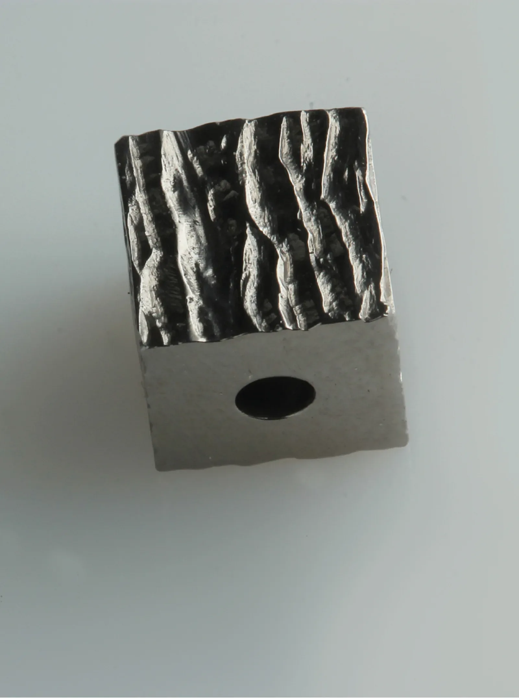

1 / 3
Alberi
Gioielli in titanio
2022
Gioielli in titanio
2022
Alberi è una serie di gioielli in titanio: studi sperimentali sulla forma elementare.
La forma resta essenziale, un piccolo volume geometrico, mentre cambia la superficie: trattamenti diversi del metallo, lisci o lavorati come una corteccia, ne modificano il colore e il modo in cui riflette la luce. È una ricerca sul materiale e sulla luce, che parte da disegni di rami e cortecce.
Samuele SilvestriArchitetto
Via Asiago 58, 41125 Modena
info@samuelesilvestriarchitetto.com
+39 366 493 8286
Instagram Iscr. Ordine degli Architetti di Modena n°1437 – sez. A
P.IVA 04180440366


